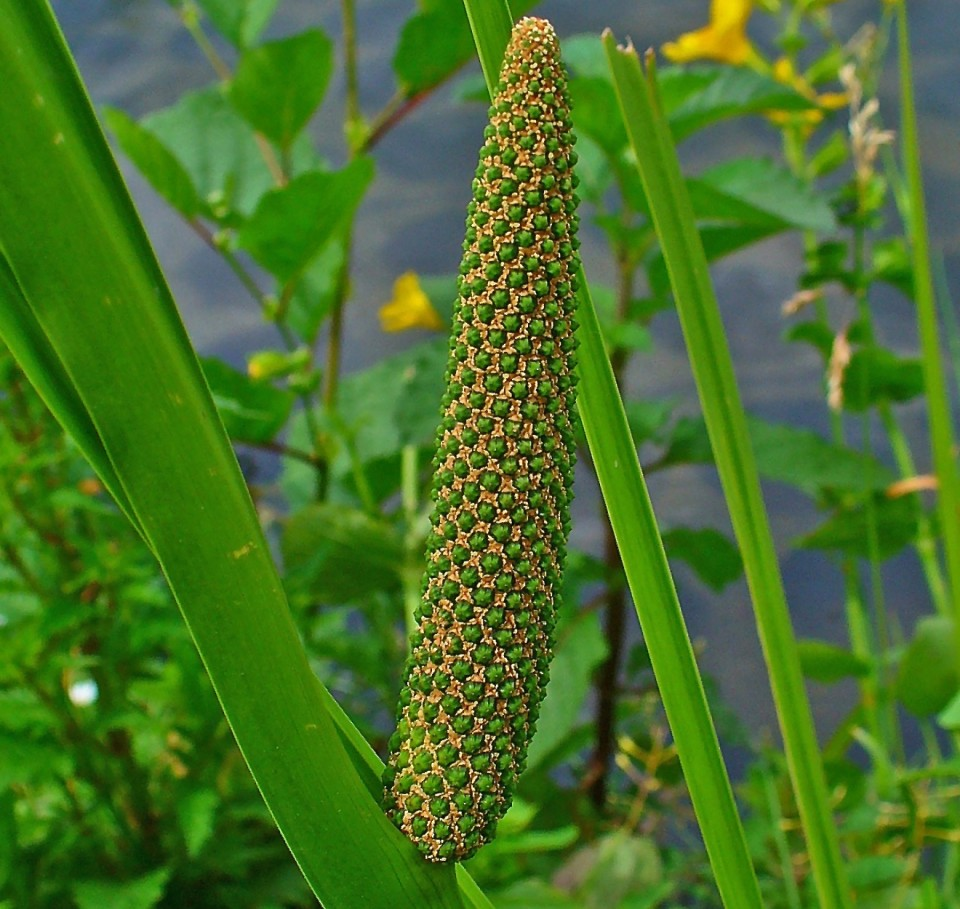

Basonym of Drug
Vacha
Main Synonym
- Ugragandha
- Shadagrantha
- Golomi
- Shatparvika
- Ksudraptri
- Mangalya
- Ugra
- Lomasha
- Jatila
Regional Name
- Bengali: Vacha
- Gujarati: Vaja, Ghodavaja
- Hindi: Vach, Ghodavach
- Marathi: Vekhanda
- Tamil: Vahsambu
- Telugu: Vasa
- English: Sweet Flag
Botanical Name
Acorus calamus Linn
Family
Areceae
Classification (Gana)
- Aacharya Charaka: Lekhaniya, Arshoghna, Triptighna, Shirovirechanopaga, Asthapanopaga, Sheetaprashamana Gana, Sangyasthapana Mahakashaya
- Aacharya Sushruta: Vachadi, Pippalyadi, Mustadi Gana
- Aacharya Vagbhata: Vachadi, Mustadi, Haridradi, Vatsakadi, Chardana, Niruhana Gana
External Morphology
An aromatic wetland herb
Useful Parts
Important Phytoconstituent
- Cadalene
- Calamenone
- Calarene
- Acolamone
- Acorene
- Acoragermacrone
- Acoramone
- Calacone
Rasa Panchak
- Rasa: Katu, Tikta
- Guna: Laghu, Tikshna
- Virya: Ushna
- Vipaka: Katu
Action
Vatakaphahara
Therapeutic Indication
- Lekhaniya (Scrapping the Excessive Fat and Kapha Humour)
- Medhya (Increases Intellect)
- Unmadahara (Treat Mental Disorders)
- Apasmarahara (Anti-epileptic)
- Jwarahara (Anti-pyretic)
Therapeutic Uses
- Vishama Jwara - Vacha and Pippali powder with rock sugar and honey is beneficial in intermittent fever.
- Arsha - Roasted Vacha, Bhanga, and Ajwain seeds emission is beneficial in hemorrhoids.
- Vamaka - For bio-purification, powder of Vacha is beneficial as a vomiting inducer.
Dose
Powder: 250-500 mg, as vomiting inducer: 1-2 gm
Formulations
- Vachadi Ghrita
- Vachadi Churna
- Vacha Avaleha
- Balachaturbhadra Churna
Adverse Effect
Not Known
Remedial Measure
Not required